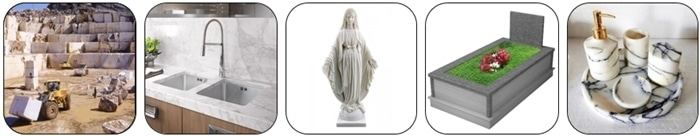
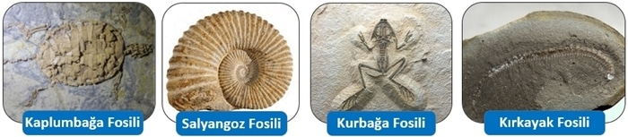

Kayaçlar
Canlılar, Dünya’nın dış katmanında yani yer kabuğunda yaşarlar. Yer kabuğunda dağlar, tepeler, ovalar, vadiler, yaylalar gibi yeryüzü şekilleri bulunur.
Kayaçlar Nedir?
 Kayaçların Oluşumu
Kayaçların Oluşumu
Kayaçlar nasıl oluşur?
Manto katmanında bulunan magmanın yeryüzüne ulaşarak soğuyup katılaşmasıyla kayaçlar oluşur. Kayaçlar, yer kabuğunun kara tabakasını oluşturur.Yer kabuğundaki kayaçlar değişik amaçlarla kullanılır. Örneğin kum ve taş bina yapımında kullanılır. Mermer, inşaatlarda ve heykel yapımında kullanılır. Granit, zemin ve duvar yapımında kullanılır.
Çeşitli Kayaç Örnekleri
Mineral Nedir?
Kayaçların birbirinden farklı özellikte olmasını sağlayan ve yapılarını oluşturan maddelere mineral adı verilir. Mineraller doğal yollarla oluşan belli özelliklere sahip katı maddelerdir.Örneğin Pamukkale Travertenleri’nin beyaz renkte ve yumuşak bir yapıda olması bu mineraller sayesindedir.
Kayalar rüzgâr, sıcaklık farkı, yağmur ve akarsu gibi dış faktörlerle parçalanır. Bunun sonucunda kayalar, çakıl, taş ve kum taneciklerine dönüşür.
Madenler
Yer kabuğunda bulunan bazı kayaçların ekonomik değeri çok yüksektir. Örneğin altın ekonomik değeri yüksek bir kayaçtır.Maden Nedir?
Yer kabuğunun derinliklerinde, çeşitli doğal etkenlerle oluşan ve ekonomik değeri olan kayaçlara maden adı verilir. Bu kayaçları yeryüzüne çıkarabilmek için maden ocakları açılır. Maden ocaklarında taş ve toprakla karışık olarak çıkarılan madenler, ekonomik değeri olmayan taş ve topraktan arındırılır. Daha sonra bu madenler teknoloji ve sanayide ayrıca birçok eşyanın yapımında ham madde olarak kullanılır.Ülkemizde çıkarılan önemli madenlere bor, altın, bakır, gümüş, mermer, linyit, taş kömürü, krom, demir ve cıva gibi madenler örnek verilebilir. Şimdi bu madenlerin kullanım alanlarını inceleyelim.
Madenlerin Kullanım Alanları
Altın
Altın Madeni ve Kullanım Alanları Altın, tarih boyunca insanoğlu için değerli bir maden olmuştur. Kuyumculukta, elektrik-elektronikte, diş hekimliğinde, süslemede, madalya yapımında, resmi paralarda kullanılan madendir.Bor
Bor Madeni ve Kullanım Alanları Tekstil, tarım, cam, seramik sanayisinde, bazı temizlik ürünlerinin yapımında ve uçak yakıtlarında kullanılan madendir. Ülkemizdeki bor madeni, dünyadaki toplam bor madeninin yaklaşık %72’sini oluşturmaktadır.Demir
Demir Madeni ve Kullanım Alanları Otomobil yapımında, inşaatlarda, tren rayı ve köprü yapımında, bilgisayarların önemli bir parçası olan manyetik depolama alanlarının yapımında kullanılan madendir.Bakır
Bakır Madeni ve Kullanım Alanları Elektrik-elektronikte, inşaatlarda, ulaşımda, kuyumculukta, boya üretiminde, turistik eşya ve mutfak eşyası yapımında kullanılan madendir.Mermer
 Mermer Madeni ve Kullanım AlanlarıMutfak tezgâhlarında, süs eşyalarında, inşaat sektöründe, heykelcilik ve mezar taşı yapımında kullanılan madendir.Linyit,Taş Kömürü,Gümüş,Çinko,Krom,Nikel,Kurşun gibi madenlerde bulunmaktadır.
Verilen örneklerden anlaşıldığı gibi madenler teknolojinin pek çok alanında ham madde olarak kullanılmaktadır. Maden varlıkları ülkelerin en önemli ekonomik güçleridir. Ayrıca madenlerin kullanım alanının fazla olması günlük yaşantımızdaki önemlerini bir kat daha artırmaktadır.
Fosiller
Bilim insanları kayaçları incelerken tabakalar arasında milyonlarca yıl önce yaşamış canlılara ait kalıntılara ve izlere rastlamışlardır.Fosil Nedir?
Geçmişte yaşamış canlıların taşlaşmış kalıntı veya izlerine fosil denir.Fosilleri inceleyen bilim insanları eskiden yaşamış canlılar ve bu canlıların yaşadığı bölge hakkında önemli bilgiler elde edebilmektedir.
Fosiller Nasıl Oluşmuştur?
Fosillerin Oluşum Süreci Ölen her canlı fosilleşmez. Fosilleşmenin gerçekleşmesi için canlı kalıntılarının hava ile temasının kesilmesi gerekir. Canlı kalıntısının üzeri taş, kum, kil veya toprak ile örtülür. Bu örtü canlı kalıntısı üzerinde tabaka oluşturur. Böylece canlı kalıntıları zamanla taşlaşarak fosilleşir.Fosillerin Ortaya Çıkma Süreci Üzerinde bulunan tabakanın doğal yollarla aşınması sonucunda fosiller ortaya çıkar.
Fosillere Nerelerde Rastlanılabilir?
Fosillere sadece kayaçlarda rastlanmaz. Deniz dipleri, ağaç reçineleri veya buzullarda da fosiller bulunabilir. Örneğin buz kütlesi içinde mamut fosilleri, bitki reçinesi içinde böcek ve küçük sürüngenlerin fosilleri bulunmuştur.
Bu ünitemizde Kayaçlar,Madenler ve Fosiller konusunu detaylı bir şekilde öğrendik artık 2.Üniteye geçebiliriz.